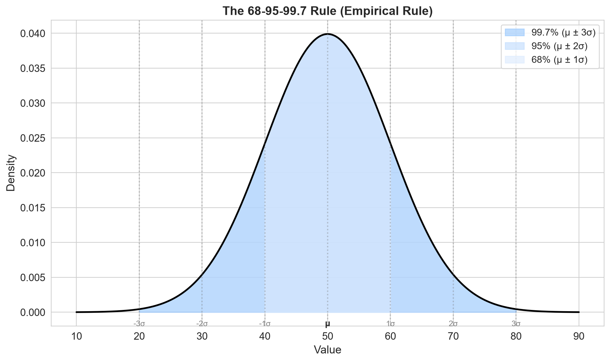
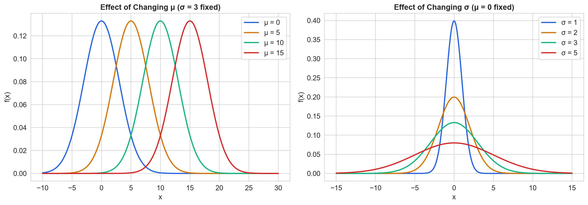
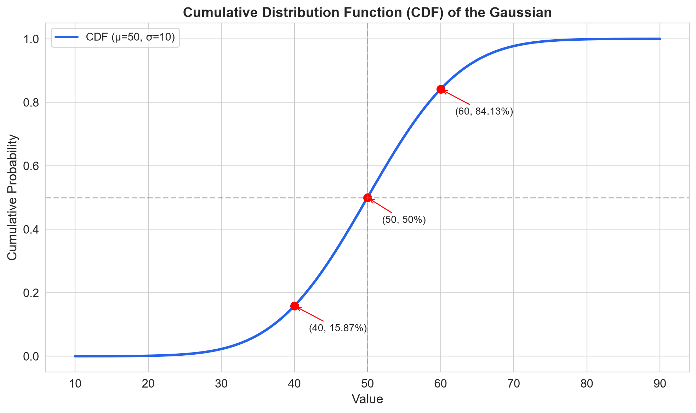
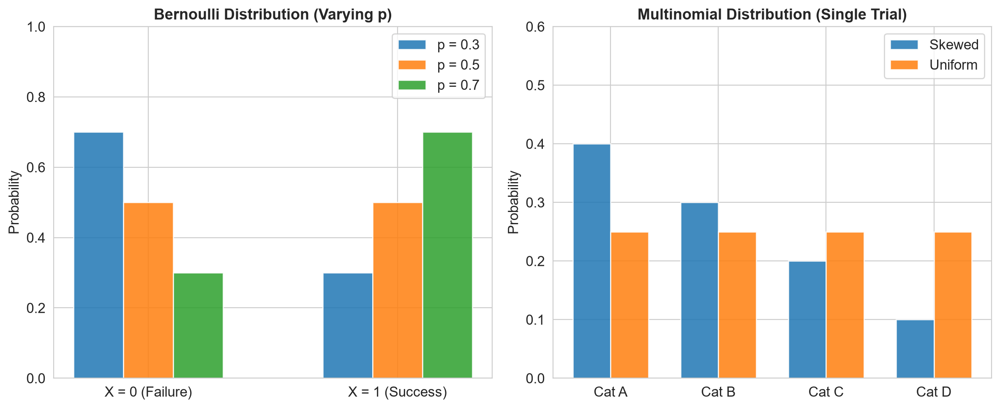
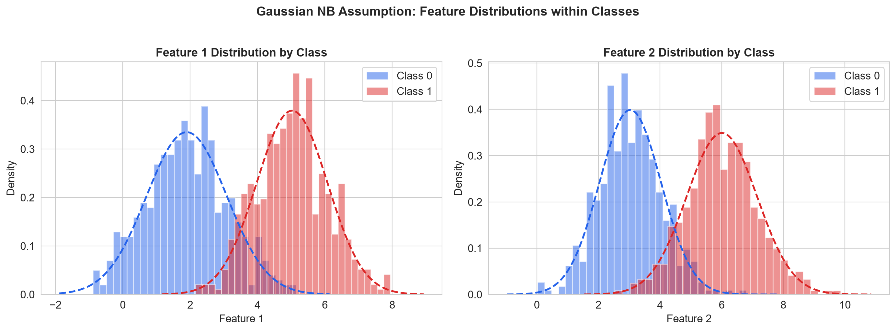
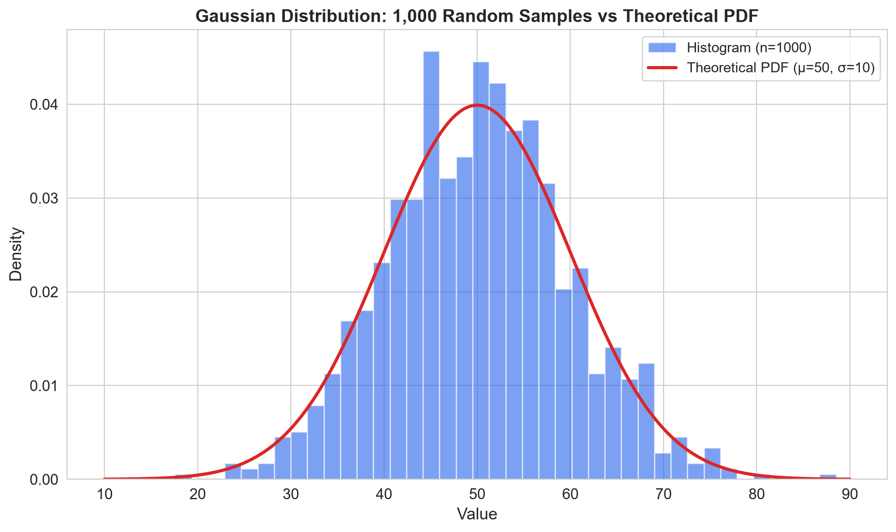
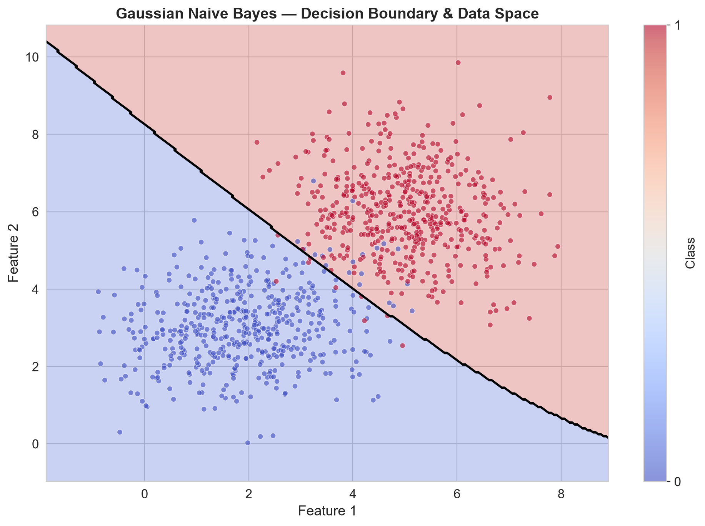
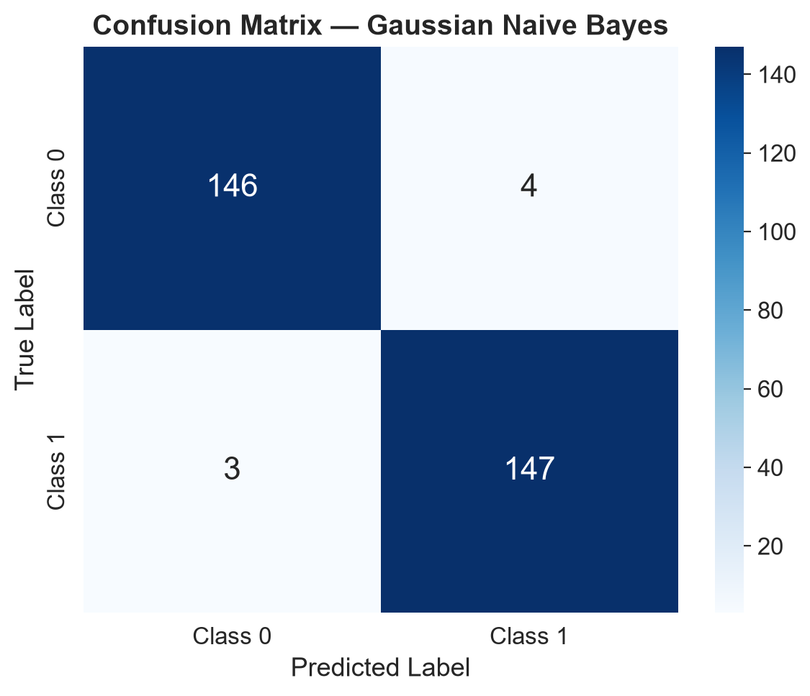

Exploring the Gaussian Distribution & Naive Bayes Classification
Group 8 | Probability Distribution & Statistical Modeling
When an algorithm knows how data is distributed, it can predict outcomes, spot anomalies, and separate signals from noise.
Continuous The cornerstone of classical and modern statistics.

| Symbol / Term | Statistical Role |
|---|---|
| x ∈ (-∞, +∞) | Continuous random variable outcome |
| μ = E[X] | Location parameter (Mean, Median, Mode) |
| σ | Scale parameter (Standard Deviation, spread) |
| σ² = Var(X) | Variance of the distribution |
| 1 / (σ√(2π)) | Normalizing constant ensuring ∫ f(x) dx = 1 |
| exp(-(x-μ)² / 2σ²) | Exponential kernel creating the symmetric bell decay |


Models a single binary event (Success = 1, Failure = 0):
Mean: μ = p | Variance: σ² = p(1 − p)
Applied in binary feature presence (e.g. word exists in document: Yes/No).
Generalizes Bernoulli/Binomial to K distinct discrete categories:
Mean: E[Xᵢ] = n·pᵢ | Variance: Var(Xᵢ) = n·pᵢ(1 − pᵢ)
Applied in frequency counts (e.g. term occurrences in text mining).

| Bayesian Component | Definition & Role |
|---|---|
| Posterior: P(Ck | X) | Probability that instance X belongs to class Ck |
| Likelihood: P(X | Ck) | Probability of observing features X given class Ck |
| Prior: P(Ck) | Baseline relative frequency of class Ck in training data |
| Evidence: P(X) | Total probability of features (constant normalizer) |
Why it succeeds in practice: Classification only requires picking the argmax posterior. Even when probability estimates are skewed by feature correlation, the optimal ranking between classes frequently remains correct.
Estimation: For each class and feature, we only need to estimate sample mean μ̂kj and sample variance σ̂²kj. Extremely fast training with O(N · d) complexity!

Feature Domain: Real numbers ℝ (e.g. sensor readings, prices, blood tests)
Likelihood Model: Continuous Normal PDF
Parameters per Class: Mean μkj, Variance σ²kj
Feature Domain: Binary values {0, 1} (word present / absent)
Likelihood Model: Discrete Bernoulli PMF
Parameters per Class: Probability of presence pkj
Feature Domain: Integer counts ℕ₀ (term frequencies, token occurrences)
Likelihood Model: Multinomial PMF
Parameters per Class: Token frequency ratio θkj
Given observed sample data D, the likelihood function L(θ | D) evaluates the plausibility of parameter vector θ:
Finds parameter values that maximize the observed data probability:
✅ Zero Iterative Optimization: Unlike Neural Networks or SVMs requiring gradient descent, Gaussian NB parameters are computed directly in a single pass over the dataset.
Historic Milestone
Paul Graham's landmark essay "A Plan for Spam" (2002) popularized Bayesian spam filtering, powering early production spam engines including SpamAssassin and Gmail.
The Wisconsin Breast Cancer and Pima Indians Diabetes benchmarks consistently show Gaussian NB achieving 93–96% diagnostic accuracy despite its simplicity.

| Metric | Theoretical | Simulated (n=1,000) | Absolute Error |
|---|---|---|---|
| Mean (μ) | 50.0000 | 50.1933 | 0.1933 |
| Variance (σ²) | 100.0000 | 95.8864 | 4.1136 |
| Std Dev (σ) | 10.0000 | 9.7922 | 0.2078 |


Thank You! Questions & Discussion 🙋